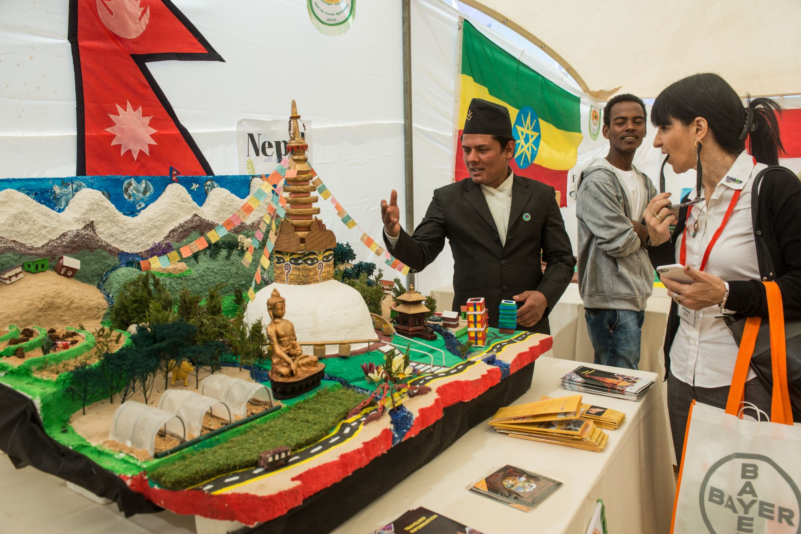

Welcome To
A I C A T
|
|
AICAT menghadirkan pelatihan pertanian berbasis teknologi dan inovasi.
Pelajari terlebih dahulu sistem pembelajaran, kurikulum, serta pengalaman yang akan kamu dapatkan di AICAT sebelum melakukan pendaftaran.
Daftar Sekarang Lihat Program
AICAT merupakan pusat pelatihan pertania6n internasional yang berfokus pada penerapan teknologi modern, inovasi berkelanjutan, serta kolaborasi global dalam sektor agrikultur.
Melalui pendekatan praktik langsung di lapangan dan pendampingan dari para ahli, AICAT mempersiapkan generasi pemimpin pertanian masa depan yang mampu memberikan dampak nyata bagi masyarakat dan pembangunan berkelanjutan.
Program pelatihan pertanian modern berbasis pengalaman langsung.
Belajar langsung di farm modern dengan teknologi pertanian mutakhir.
Berinteraksi dan membangun jaringan dengan peserta dari berbagai negara.
Peserta memperoleh uang saku sesuai ketentuan program yang berlaku.
Tahapan proses mengikuti program pelatihan pertanian modern.
Kami hadir dengan pendekatan berbeda untuk mencetak generasi petani modern Indonesia.
AICAT menyelenggarakan program pelatihan pertanian yang selaras dengan standar internasional, mengintegrasikan teknologi pertanian modern, metode berbasis riset, serta praktik terbaik global untuk mempersiapkan peserta menghadapi tantangan nyata di sektor pertanian.
Kami menekankan implementasi langsung di lapangan melalui pelatihan terarah, lahan demonstrasi, serta sistem pertanian berbasis teknologi untuk memastikan peserta memperoleh keterampilan yang aplikatif dan terukur.
AICAT bekerja sama dengan para ahli pertanian berpengalaman, peneliti, serta mitra internasional guna menghadirkan pertukaran pengetahuan yang komprehensif dan perspektif global dalam pengembangan pertanian.
Keberlanjutan menjadi fondasi utama AICAT. Kami mendorong praktik pertanian yang ramah lingkungan, solusi berbasis inovasi, serta strategi pengembangan pertanian jangka panjang yang berkelanjutan.
Partner Countries
Alumni
Years Experience
Mari kita lihat pengalaman mereka

Bergabunglah dengan program pelatihan internasional AICAT dan
pelajari teknologi pertanian
modern langsung dari para ahli.